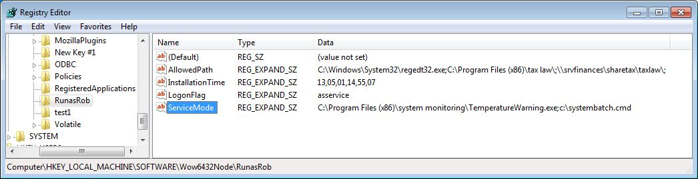

Details und Unterschiede
Details und Unterschiede
RunAsRob Command line parameter, Registry Werte, Möglichkeit mit Gruppenrichtlinien und der Unterschied zu RunAsSpc
Vergleichstabelle RunAsRob, RunAsAdmin, RunAsService und RunAsSpc:
Command line options RunAsRob
-
Installationsbefehle
>> runasrob.exe /install <<
>> runasrob.exe /uninstall <<
-
Um ein Cryptfile zu erstellen,
starten Sie das Konfigurationsfenster von RunasRob mit einem Doppeklick auf runasrob.exe oder verwenden sie die Option /configure
>> runasrob.exe /configure << -
Das Cryptfile selbst starten Sie über den Parameter /cryptfile:
>> runasrob.exe /cryptfile: “c:\path\yourcryptfile.xus”<<
oder per drag and drop des Cryptfiles auf runasrob.exe. -
Für einen Aufruf ohne Statusmeldungen setzen sie den Schalter /quiet
>> runasrob.exe /install /quiet <<
>> runasrob.exe /cryptfile: “c:\path\yourcryptfile.xus” /quiet << -
Um Ordnerpfade bei der Installation zu autorisieren.
Installieren Sie RunasRob mit der Option /allowedpath: gefolgt von den zu erlaubenden Pfaden bzw. Anwendungen. Strichpunkt getrennt bei mehreren Pfaden.
>> runasrob.exe /install /quiet /allowedpath:c:\program files\folder1\;\\server\share\folder2\;c:\windows\system32\regedt32.exe<< -
Um aus diesen freigegebenen Ordner ein Programm zu starten, müssen Sie es per Drag and Drop über runasrob.exe ziehen
oder Sie geben folgenden Befehl ein:
>> runasrob.exe c:\freigegebenerOrdner\applicaton.exe <<
Dieser kann direkt in der Befehlszeile, als Batchdatei, Verknüpfung oder sonst irgendwie erfolgen. -
Eine weiterer optionaler Parameter ist /assystem oder /asadmin
/assystem -> Die freigegebene Anwendung startet unter dem service account mit erhöhten Administrator Rechten.
/asadmin -> Nach Eingabe der Anmeldedaten wird der Benutzer zum Mitglied der lokalen Administratoren für diese Anwendung welche dann.unter seinem eigenen Account startet.
>> runasrob.exe /install /allowedpath:"\\server\share1\setup.exe;\\server\share2\;C:\windows\system32\regedt32.exe /asadmin;C:\Windows\System32\WindowsPowerShell\v1.0\powershell_ise.exe /assystem" << -
Um eine Anwendung
oder Script permanent als Dienst zu starten installieren Sie
RunasRob mit der Option /servicemode: gefolgt von der
entsprechenden Anwendung
>> runasrob.exe /install /servicemode:c:\test\yourScript.cmd << -
Sie können die
Parameter von RunasRob kombinieren wie in folgendem Beispiel:
>> runasrob.exe /install /quiet /servicemode:"c:\system\monitoring.exe" /allowedpath:"\\server\share\folder2\;c:\windows\system32\regedt32.exe /asadmin" << -
Erstellen von Cryptfiles über Kommandozeile ist durch
RunasSpc möglich. Diese Cryptfiles sind auch mit RunasRob.exe
lesbar.
runasspc.exe /cryptfile:"crypt.spc" /program:"C:\WINDOWS\system32\calc.exe" /domain:"localhost" /user:"administrator" /password:"password"
Registry Werte und Möglichkeit mit Gruppenrichtlinien:
Registry Key von RunasRob bearbeiten
HKEY_LOCAL_MACHINE\SOFTWARE\RunasRob
Hier können Sie die Werte AllowedPath, ServiceMode, LogonFlag direkt
oder über zentrale Gruppenrichtlinien in einer Domain bearbeiten.
Änderungen greifen nach einem Neustart des Dienstes RunasRob.
Achtung, eine falsche Verwendung der Registry, kann schwerwiegende Probleme im Betriebssystem verursachen.

Über Gruppenrichtlinien in der Domain können sie diese Einstellungen zentral verwalten.
runasadminde.html#Bygrouppolicy > > >
FAQ:
- Läuft unter Windows 10 Professional und Home, Windows Server 2019.
- 64 Bit und 32 Bit Version included.
-
Die Einschränkung in der freien Version für den privaten Gebrauch ist der Startdialog mit der Lizenzinformationen,
welcher in unregelmäßigen Zeitabständen erscheint, auch wenn der Parameter /quiet gesetzt ist. - Umgebungsvariablen werden unterstützt. >>%windir%\system32\regedt32.exe\CompMgmtLauncher.exe <<
- Wildcards können als autorisierter Pfad eingesetzt werden. Beispiel >> *\updates\flashplayerversion*.exe <<
-
Autorisiere nur einen bestimmten Benutzer oder eine Gruppe die Anwendung zu starten.
Das kann erreicht werden durch das Setzen von Verzeichnisrechte auf die Programmdatei, das Encrypted file oder deren Ordner. -
Programm Parameter können übergeben werden. Falls die Parameterübergabe aufgrund von Anführungszeichen oder komplexen Argumenten nicht direkt funktioniert,
umgehen sie das Problem einfach durch das Erstellen einer einzeilen Batchdatei mit dem Programmaufruf und den Parametern.
Rufen sie diese Batchdatei dann über RunAsRob auf. -
Error Codes.
Die meisten Error Codes sind Systemfehler die RunAsRob zurückmeldet und werden bei Microsoft MSDN erklärt.
https://msdn.microsoft.com/en-us/library/ms681381.aspx
Kontakt:
Für Verbesserungsvorschläge, Fragen, spezielle Anforderungen oder Anpassungen schreiben sie uns.
runas@robotronic.de
Lizenz:
RunasRob ist nur für die private Verwendung frei.
Für Unternehmen und andere Organisationen gibt es auf den Organisationsnamen lizenzierte Versionen.
Bestellung RunasRob >>>
Download RunasRob >>>
Date: 2019-10-13
Datenschutz
Impressum